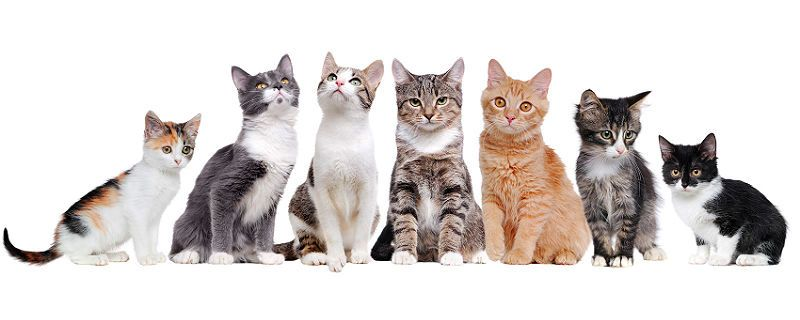
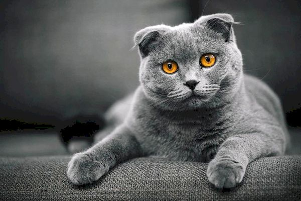
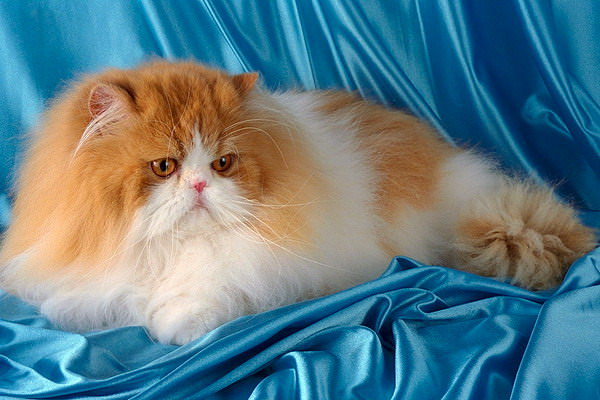
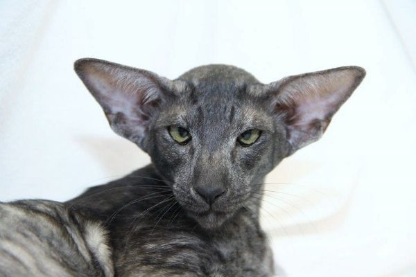
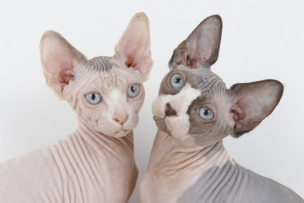
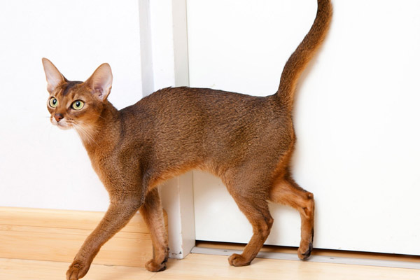
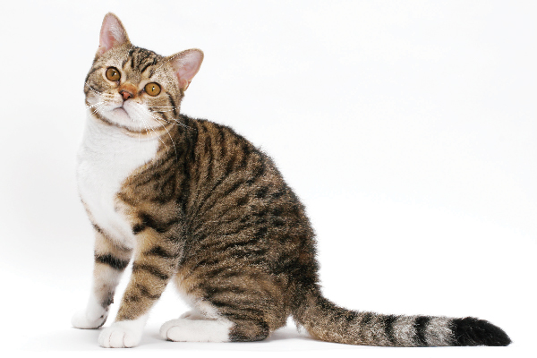
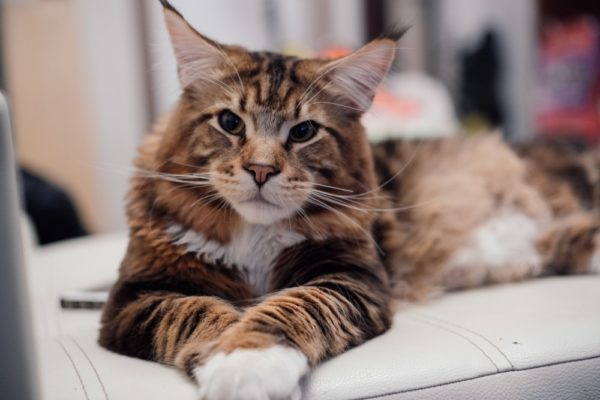
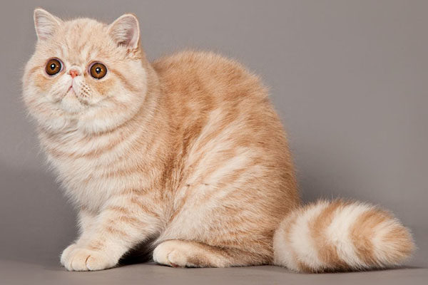

Жмяк сюда, чтобы перейти к inline-block
Жмяк сюда, чтобы перейти к t-cell
Жмяк сюда, чтобы перейти к float
Жмяк сюда, чтобы перейти к flex
Самые популярные породы кошек
В Украине кошачий бум. Все больше и больше граждан нашей страны хотят завести себе кошку эксклюзивной породы. И если раньше некоторых пород просто было не найти, то сегодня заводчики готовы предложить покупателю практически любую известную породу. Главное что бы денег хватило. Ведь стоят котята эксклюзивных пород, совсем не мало.
Шотландская кошка

Шотландцы — одна из самых распространённых пород кошек во всём мире. И это не удивительно, ведь они игривые независимо от возраста и очень ласковые. Мало того, они способны вызвать умиление одним лишь внешним видом.
При уходе за шотландской кошкой особое внимание стоит уделить ушам, их нужно чистить аккуратно и регулярно, особенно это касается разновидности породы фолд.
Правильно питание для шотландской породы очень важно, ведь оно влияет не только на здоровье, но и на внешний вид. Кисломолочные продукты, телятина и отварная нежирная курица непременно понравится вашему любимцу.
Британская кошка

Британские кошки, которые внешне похожи на плюшевые игрушки, имеют мягкий и спокойный характер, отлично ладят с детьми. Ухаживать за ними немного легче, чем за длинношерстными кошками, но вычёсывать раз в неделю всё-таки придётся.
Кормить британцев следует в одно и то же время, к этому нужно их приучать с детства, и питание должно быть разнообразным.
Персидская кошка

Персидскую внешне не спутаешь ни с одной пушистой кошкой, ведь у них своеобразная приплюснутая форма мордочки. Вальяжные и флегматичные персы не предназначены для жизни вне дома. Основное внимание при уходе за персидской кошкой стоит уделить глазам, ведь они постоянно слезятся. Но не стоит забывать про роскошную длинную шерсть, которая требует постоянного расчесывания.
Питание должно быть сбалансированным и разнообразным. Ведь персы очень требовательны к содержимому своей тарелки.
Ориентальная кошка

Ориентальные кошки очень привязываются к хозяину, они желают находиться постоянно рядом с ним. Эти ласковые кошки-компаньоны — отличное решение для семьи с ребёнком, ведь ухаживать за такой породой проще простого: короткошерстным котам стоит только чистить ушки и следить за состоянием когтей, а длинношерстных стоит изредка расчесывать. Ориентальные кошки не привередливы в еде, главное, чтоб всё было свежее и полезное.
Кошки породы сфинкс

Сфинкс — загадочные кошки с уникальным внешним видом. Эти теплолюбивые коты очень любят общение, находится в компании людей для них целое удовольствие. Ухаживать за сфинксом намного проще, чем за другими породами котов, ведь у них вовсе нет шерсти. Но постоянная чистка глаз и ушей понадобится. Кошки породы сфинкс не перебирают пищей и едят всё, главное, что должно быть в их рационе — это мясо.
Абиссинская кошка

Абиссинская кошка — очень умное и активное животное, которое не любит одиночества. Эта чистоплотная порода кошек очень любит купаться, не отказывайте ей в этом удовольствии и набирайте для неё тазик с водой раз в месяц. Кормить абиссинскую кошку несложно, стоит всего лишь приучить её к разным видам корма.
Кошка породы рэгдолл

Эта флегматичная порода кошек считает себя полноправным членом семьи. Мурлыканье этих кошек просто завораживает. Вычёсывать котов породы рэгдолл следует гребнем с длинными редкими зубцами. А что касается питания, рэгдоллы любят покушать. Харчами они не перебирают и наедаются вдоволь.
Американская кошка

Американские кошки — прекрасные охотники, при этом они игривы и дружелюбны. Ежедневное вычёсывание щёткой для этой короткошерстной породы просто необходимо, также, как и чистка зубов специальной зубной пастой для животных. Американские кошки очень любят мясо, поэтому оно обязательно должно быть в рационе.
Коты породы мейн-кун

Эти огромные и красивые коты считаются одной из самых неконфликтных пород, они очень любят поиграть и поспать. Кошки породы мейн-кун требуют основательного ухода за роскошной шерстью. Их следует регулярно купать и расчёсывать несколькими видами счёток. Кормить котов этой породы стоит сухими кормами премиум-класса, а также не забывать про мясо.
Экзотическая кошка

Экзоты — необычайно очаровательные коты с мягким и покладистым характером созданы для того, чтоб умилять домочадцев. Коты экзотической породы любят вкусно покушать, а также требуют внимания к своей шикарной шёрстке. В рационе этих котов должны обязательно содержаться белки